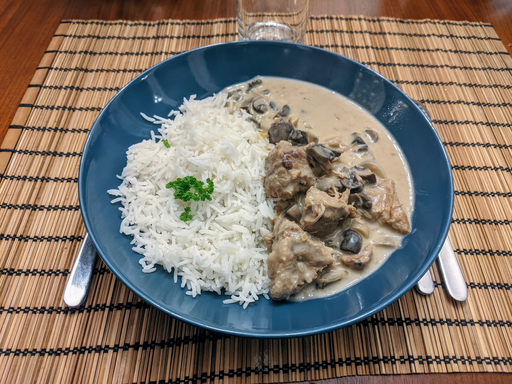

Blanquette de veau

Pour 6 personnes :
- 1kg de morceaux de blanquette, à la fois avec et sans cartilages.
- Entre 400 et 800g de champignons de Paris
- Un gros pot de crème fraîche épaisse
- 2 oignons
- 2 échalotes
- Farine
- Margarine, huile d'olive
- Persil, sel, poivre
- Faire chauffer huile et margarine dans une cocotte, puis faire revenir doucement les morceaux de veau de tous les côtés.
- Enlever les morceaux de la cocotte, retirer la cocotte du feu, et enrober un par un les morceaux de viande dans de la farine. Remettre la cocotte sur le feu quand c'est fini (avec, au besoin, un peu d'huile/margarine en plus), et faire revenir de tous les côtés les morceaux. Il faut que ça prenne une jolie couleur jaune/orange, mais pas que ça ne brunisse trop.
- Mouiller avec de l'eau (il faut que ça recouvre à peu près la viande, mais pas plus).
- Couper les oignons et les échalotes en tout petits bouts, les rajouter dans la cocotte avec persil, sel et poivre.
- Couvrir, laisser mijoter 1h - 1h30 environ à feu doux à partir des premiers bouillons. Durant la cuisson, c'est une bonne idée de vérifier de temps à autre que ça n'attache pas, et de gratter le fond de la casserole si besoin.
- Rajouter la crème et les champignons, et poursuivre encore une demi-heure la cuisson (à feu doux à partir des premiers bouillons). Servir avec du riz, et lancer des cailloux sur vos invités s'ils vous disent que c'est meilleur avec des patates.
Note : en Suisse, trouver de la crème fraîche épaisse est essentiellement impossible (surtout, ne pas utiliser la "crème fraîche" que l'on peut trouver en supermarché, c'est un piège, c'est en fait de la crème acidulée, totalement inadaptée pour une quiche). On peut la remplacer par une moitié de crème liquide allégée, et une moitié de double crème de la Gruyère ; ou bien uniquement par de la crème liquide entière et un peu plus de farine (mais ça a un peu plus tendance à attacher, donc la première option est meilleure).
Retour à la liste des recettes